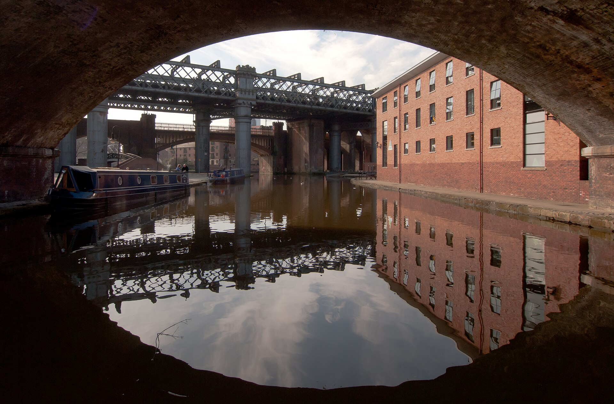

Ruta 01
Canales, revolución industrial y democracia
La opción más completa para una primera visita: relaciona los lugares que explican por qué Mánchester cambió la industria, la ciencia y la política urbana.

Castlefield sin reloj
Castlefield, viaductos y fuerte romano · 2 h 30 min
Los canales de Bridgewater, las esclusas, los almacenes y las vías superpuestas permiten leer la ciudad industrial al aire libre. El fuerte Mamucium recuerda que el asentamiento nació mucho antes del algodón. Todo es exterior, gratuito y recortable si el vuelo se retrasa.
Deansgate y Spinningfields · 75 min
El paseo contrasta almacenes victorianos con la regeneración contemporánea. Pasad por la fachada de Rylands para situar la visita del sábado; no dependéis de que siga abierta.
Máquinas, libros y derechos
Science and Industry Museum · 2 h 30 min
Ocupa el entorno de la primera estación ferroviaria interurbana y conecta vapor, textiles, informática y la capacidad inventiva de la ciudad. Abre a diario 10:00–17:00; entrada gratuita y reserva recomendada. Algunas naves siguen en restauración, por lo que hay que comprobar qué galerías están activas.
John Rylands Library · 90 min
El gran salón neogótico parece una catedral del conocimiento, pero su interés real está en cómo una fortuna industrial financió una biblioteca pública de investigación. El sábado abre 10:00–17:00, último acceso 16:40; gratis y sin reserva. La tienda solo acepta tarjeta.
People’s History Museum · 1 h 45 min
Pancartas, sindicatos, sufragio y Peterloo muestran que la modernidad industrial también produjo conflictos y nuevas formas de ciudadanía. Abre sábado 10:00–17:00; entrada gratuita, donación sugerida de £10. No necesita reserva individual.
Colecciones y barrios creativos
Manchester Museum · 2 h 30 min
Su edificio universitario reúne arqueología, culturas del mundo y ciencias naturales, y la Manchester China Gallery amplía una lectura que va más allá del museo victoriano tradicional. El domingo abre 10:00–17:00, último acceso 16:30; gratis. El lunes estará cerrado.
Whitworth y Whitworth Park · 2 h
Arte moderno, textiles y obra sobre papel encajan especialmente bien en una ciudad ligada a la industria textil. El edificio abre el museo hacia el parque, de modo que el bloque funciona incluso si preferís una visita corta. Domingo 10:00–17:00; entrada gratuita.
Northern Quarter y Ancoats · 2 h
Murales, talleres, viviendas industriales reutilizadas y el canal de Rochdale muestran la ciudad creativa actual sin convertir el paseo en una simple colección de fotos. Exterior y gratuito; acortad con bus si llueve.
Biblioteca o aeropuerto
Desayuno, equipaje y aeropuerto. No añadáis entradas.
09:00–11:00 Central Library y St Peter’s Square. La sala circular y los archivos explican la continuidad entre biblioteca pública y ciudad cívica. El lunes abre 09:00–17:00 y es gratuita.
Horario oficial